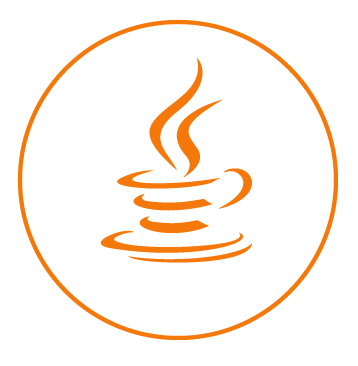

 Java SE 12
The java ecosystem just
(ish)
got released!
changes, features, whats new and...ze future 😎
Get jdk12 at OpenJDK
Slides available at github.com/vegaasen/presentations
(source on GitHub)
JEPs (JDK Enhancement Proposal) included
- JEP 189 Shenandoah: A Low-Pause-Time Garbage Collector
- JEP 230 Microbenchmark Suite 😴
- JEP 325 Switch Expressions 🤓
- JEP 334 JVM Constants API 😴
- JEP 340 One AArch64 Port, Not Two 😴
- JEP 341 Default CDS Archives 😴
- JEP 344 Abortable Mixed Collections for G1 😴
- JEP 346 Promptly Return Unused Committed Memory from G1 😴
- next.java ☕️
JEP 189 Shenandoah: A Low-Pause-Time Garbage Collector
- RedHat originally committed this work to the OpenJDK
- GC that reduces pause-times!
- 👆 i.e: targeting low latency
- Architecture improves responsiveness
- Similar to how azul/zing vms work (C4 => Continuously Concurrent Compacting Collector) => commercial
- 👑 One GC to rule them all? 👑 - No
- Better ones for throughput - G1 - bette
- Better ones for memory footprint - both G1 and CMS
- Disadvantages
- Requires more read/writes
- Better ones for memory footprint - both G1 and CMS
..this is mostly "fyi"..
JEP 230 Microbenchmark Suite
Internal JDK thing..
Stream-Api: Teeing-method
Wut?
- Takes three arguments:
- Two Collectors
- BiFunction
- Input streams passed in to each collector
- BiFunction handles the results from the collectors
- Used in .collect() - returns whatever defined by the BiFunction
- Simplifies usage of e.g the reduce() function

Implementation
public static Collector teeing(
Collector downstream1,
Collector downstream2,
BiFunction merger) {
return teeing0(downstream1, downstream2, merger);
} Example
double average = Stream.of(1, 4, 2, 7, 4, 6, 5)
.collect(teeing(
summingDouble(i -> i),
counting(),
(sum, n) -> sum / n)
);
// sum => summingDouble()
// n => counting()
// result = 4.142857142857143 👻Conclusion
- Some nice (mostly under ze hood) features
- Performance still seems to be in focus - which will be the best impact of the release(🤑)!
- No string enhancement yet (JEP-326). Maybe in Java13?
- A bit booring release
Whats next?!
JDK 13 is due in September 2019 (ish) Inclusion proposals:
- Booring stuff. Check it yourself
- 😢 JEP 326? Raw String literals?! 😢